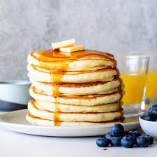

Pancake Recipe
(borrowed from "tastes bettter from scratch")
Recipes

Here's a great buttermilk pancakes recipe:
Ingredients:
- 2 cups all-purpose flour
- 2 Tablespoons sugar
- 1 1/2 teaspoons baking powder
- 3/4 teaspoons baking soda
- 1/2 teaspoon salt
- 2 cups buttermilk
- 2 large eggs, beaten
- 2 Tablespoons melted butter
- 2 Tablespoons milk
- 1 cup shredded mozzarella cheese
Steps:
-
Combine dry ingredients in a mixing bowl.
-
Add in the buttermilk, eggs, and butter
and gently mix until combined.
-
Add milk in, a bit at a time until the
mixture achieves the consistency of
pancake batter
-
Cook them tasty flapjacks on a buttered
griddle and serve with maple syrup. Some
will say to use other toppings, they are
wrong. Don't associate with those people.
They can only bring you down.